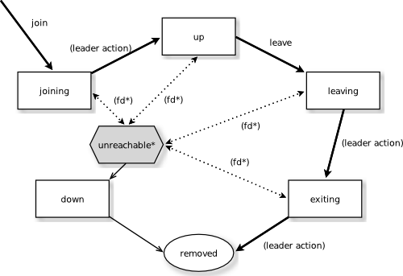

Cluster Specification
Note
This document describes the design concepts of the clustering.
Intro
Akka Cluster provides a fault-tolerant decentralized peer-to-peer based cluster membership service with no single point of failure or single point of bottleneck. It does this using gossip protocols and an automatic failure detector.
Terms
- node
- A logical member of a cluster. There could be multiple nodes on a physical machine. Defined by a hostname:port:uid tuple.
- cluster
- A set of nodes joined together through the membership service.
- leader
- A single node in the cluster that acts as the leader. Managing cluster convergence and membership state transitions.
Membership
A cluster is made up of a set of member nodes. The identifier for each node is a hostname:port:uid tuple. An Akka application can be distributed over a cluster with each node hosting some part of the application. Cluster membership and the actors running on that node of the application are decoupled. A node could be a member of a cluster without hosting any actors. Joining a cluster is initiated by issuing a Join command to one of the nodes in the cluster to join.
The node identifier internally also contains a UID that uniquely identifies this actor system instance at that hostname:port. Akka uses the UID to be able to reliably trigger remote death watch. This means that the same actor system can never join a cluster again once it's been removed from that cluster. To re-join an actor system with the same hostname:port to a cluster you have to stop the actor system and start a new one with the same hostname:port which will then receive a different UID.
The cluster membership state is a specialized CRDT, which means that it has a monotonic merge function. When concurrent changes occur on different nodes the updates can always be merged and converge to the same end result.
Gossip
The cluster membership used in Akka is based on Amazon's Dynamo system and particularly the approach taken in Basho's' Riak distributed database. Cluster membership is communicated using a Gossip Protocol, where the current state of the cluster is gossiped randomly through the cluster, with preference to members that have not seen the latest version.
Vector Clocks
Vector clocks are a type of data structure and algorithm for generating a partial ordering of events in a distributed system and detecting causality violations.
We use vector clocks to reconcile and merge differences in cluster state during gossiping. A vector clock is a set of (node, counter) pairs. Each update to the cluster state has an accompanying update to the vector clock.
Gossip Convergence
Information about the cluster converges locally at a node at certain points in time. This is when a node can prove that the cluster state he is observing has been observed by all other nodes in the cluster. Convergence is implemented by passing a set of nodes that have seen current state version during gossip. This information is referred to as the seen set in the gossip overview. When all nodes are included in the seen set there is convergence.
Gossip convergence cannot occur while any nodes are unreachable. The nodes need to become reachable again, or moved to the down and removed states (see the Membership Lifecycle section below). This only blocks the leader from performing its cluster membership management and does not influence the application running on top of the cluster. For example this means that during a network partition it is not possible to add more nodes to the cluster. The nodes can join, but they will not be moved to the up state until the partition has healed or the unreachable nodes have been downed.
Failure Detector
The failure detector is responsible for trying to detect if a node is unreachable from the rest of the cluster. For this we are using an implementation of The Phi Accrual Failure Detector by Hayashibara et al.
An accrual failure detector decouple monitoring and interpretation. That makes them applicable to a wider area of scenarios and more adequate to build generic failure detection services. The idea is that it is keeping a history of failure statistics, calculated from heartbeats received from other nodes, and is trying to do educated guesses by taking multiple factors, and how they accumulate over time, into account in order to come up with a better guess if a specific node is up or down. Rather than just answering "yes" or "no" to the question "is the node down?" it returns a phi value representing the likelihood that the node is down.
The threshold that is the basis for the calculation is configurable by the user. A low threshold is prone to generate many wrong suspicions but ensures a quick detection in the event of a real crash. Conversely, a high threshold generates fewer mistakes but needs more time to detect actual crashes. The default threshold is 8 and is appropriate for most situations. However in cloud environments, such as Amazon EC2, the value could be increased to 12 in order to account for network issues that sometimes occur on such platforms.
In a cluster each node is monitored by a few (default maximum 5) other nodes, and when any of these detects the node as unreachable that information will spread to the rest of the cluster through the gossip. In other words, only one node needs to mark a node unreachable to have the rest of the cluster mark that node unreachable.
The nodes to monitor are picked out of neighbors in a hashed ordered node ring. This is to increase the likelihood to monitor across racks and data centers, but the order is the same on all nodes, which ensures full coverage.
Heartbeats are sent out every second and every heartbeat is performed in a request/reply handshake with the replies used as input to the failure detector.
The failure detector will also detect if the node becomes reachable again. When all nodes that monitored the unreachable node detects it as reachable again the cluster, after gossip dissemination, will consider it as reachable.
If system messages cannot be delivered to a node it will be quarantined and then it cannot come back from unreachable. This can happen if the there are too many unacknowledged system messages (e.g. watch, Terminated, remote actor deployment, failures of actors supervised by remote parent). Then the node needs to be moved to the down or removed states (see the Membership Lifecycle section below) and the actor system must be restarted before it can join the cluster again.
Leader
After gossip convergence a leader for the cluster can be determined. There is no leader election process, the leader can always be recognised deterministically by any node whenever there is gossip convergence. The leader is just a role, any node can be the leader and it can change between convergence rounds. The leader is simply the first node in sorted order that is able to take the leadership role, where the preferred member states for a leader are up and leaving (see the Membership Lifecycle section below for more information about member states).
The role of the leader is to shift members in and out of the cluster, changing joining members to the up state or exiting members to the removed state. Currently leader actions are only triggered by receiving a new cluster state with gossip convergence.
The leader also has the power, if configured so, to "auto-down" a node that according to the Failure Detector is considered unreachable. This means setting the unreachable node status to down automatically after a configured time of unreachability.
Seed Nodes
The seed nodes are configured contact points for new nodes joining the cluster. When a new node is started it sends a message to all seed nodes and then sends a join command to the seed node that answers first.
The seed nodes configuration value does not have any influence on the running cluster itself, it is only relevant for new nodes joining the cluster as it helps them to find contact points to send the join command to; a new member can send this command to any current member of the cluster, not only to the seed nodes.
Gossip Protocol
A variation of push-pull gossip is used to reduce the amount of gossip information sent around the cluster. In push-pull gossip a digest is sent representing current versions but not actual values; the recipient of the gossip can then send back any values for which it has newer versions and also request values for which it has outdated versions. Akka uses a single shared state with a vector clock for versioning, so the variant of push-pull gossip used in Akka makes use of this version to only push the actual state as needed.
Periodically, the default is every 1 second, each node chooses another random node to initiate a round of gossip with. If less than ½ of the nodes resides in the seen set (have seen the new state) then the cluster gossips 3 times instead of once every second. This adjusted gossip interval is a way to speed up the convergence process in the early dissemination phase after a state change.
The choice of node to gossip with is random but it is biased to towards nodes that might not have seen the current state version. During each round of gossip exchange when no convergence it uses a probability of 0.8 (configurable) to gossip to a node not part of the seen set, i.e. that probably has an older version of the state. Otherwise gossip to any random live node.
This biased selection is a way to speed up the convergence process in the late dissemination phase after a state change.
For clusters larger than 400 nodes (configurable, and suggested by empirical evidence) the 0.8 probability is gradually reduced to avoid overwhelming single stragglers with too many concurrent gossip requests. The gossip receiver also has a mechanism to protect itself from too many simultaneous gossip messages by dropping messages that have been enqueued in the mailbox for too long time.
While the cluster is in a converged state the gossiper only sends a small gossip status message containing the gossip version to the chosen node. As soon as there is a change to the cluster (meaning non-convergence) then it goes back to biased gossip again.
The recipient of the gossip state or the gossip status can use the gossip version (vector clock) to determine whether:
- it has a newer version of the gossip state, in which case it sends that back to the gossiper
- it has an outdated version of the state, in which case the recipient requests the current state from the gossiper by sending back its version of the gossip state
- it has conflicting gossip versions, in which case the different versions are merged and sent back
If the recipient and the gossip have the same version then the gossip state is not sent or requested.
The periodic nature of the gossip has a nice batching effect of state changes, e.g. joining several nodes quickly after each other to one node will result in only one state change to be spread to other members in the cluster.
The gossip messages are serialized with protobuf and also gzipped to reduce payload size.
Membership Lifecycle
A node begins in the joining state. Once all nodes have seen that the new node is joining (through gossip convergence) the leader will set the member state to up.
If a node is leaving the cluster in a safe, expected manner then it switches to the leaving state. Once the leader sees the convergence on the node in the leaving state, the leader will then move it to exiting. Once all nodes have seen the exiting state (convergence) the leader will remove the node from the cluster, marking it as removed.
If a node is unreachable then gossip convergence is not possible and therefore any leader actions are also not possible (for instance, allowing a node to become a part of the cluster). To be able to move forward the state of the unreachable nodes must be changed. It must become reachable again or marked as down. If the node is to join the cluster again the actor system must be restarted and go through the joining process again. The cluster can, through the leader, also auto-down a node after a configured time of unreachability. If new incarnation of unreachable node tries to rejoin the cluster old incarnation will be marked as down and new incarnation can rejoin the cluster without manual intervention.
Note
If you have auto-down enabled and the failure detector triggers, you can over time end up with a lot of single node clusters if you don't put measures in place to shut down nodes that have become unreachable. This follows from the fact that the unreachable node will likely see the rest of the cluster as unreachable, become its own leader and form its own cluster.
As mentioned before, if a node is unreachable then gossip convergence is not possible and therefore any leader actions are also not possible. By enabling akka.cluster.allow-weakly-up-members it is possible to let new joining nodes be promoted while convergence is not yet reached. These Joining nodes will be promoted as WeaklyUp. Once gossip convergence is reached, the leader will move WeaklyUp members to Up.
Note that members on the other side of a network partition have no knowledge about the existence of the new members. You should for example not count WeaklyUp members in quorum decisions.
State Diagram for the Member States (akka.cluster.allow-weakly-up-members=off)
State Diagram for the Member States (akka.cluster.allow-weakly-up-members=on)

Member States
- joining
transient state when joining a cluster
- weakly up
transient state while network split (only if akka.cluster.allow-weakly-up-members=on)
- up
normal operating state
- leaving / exiting
states during graceful removal
- down
marked as down (no longer part of cluster decisions)
- removed
tombstone state (no longer a member)
User Actions
- join
join a single node to a cluster - can be explicit or automatic on startup if a node to join have been specified in the configuration
- leave
tell a node to leave the cluster gracefully
- down
mark a node as down
Leader Actions
The leader has the following duties:
- shifting members in and out of the cluster
- joining -> up
- exiting -> removed
Failure Detection and Unreachability
- fd*
the failure detector of one of the monitoring nodes has triggered causing the monitored node to be marked as unreachable
- unreachable*
unreachable is not a real member states but more of a flag in addition to the state signaling that the cluster is unable to talk to this node, after being unreachable the failure detector may detect it as reachable again and thereby remove the flag
Contents